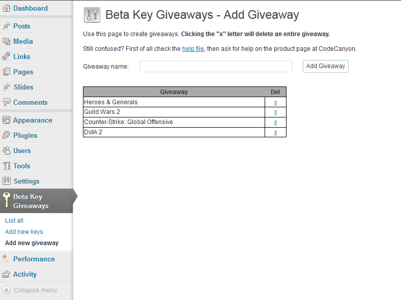
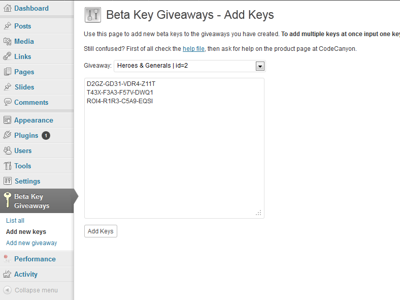
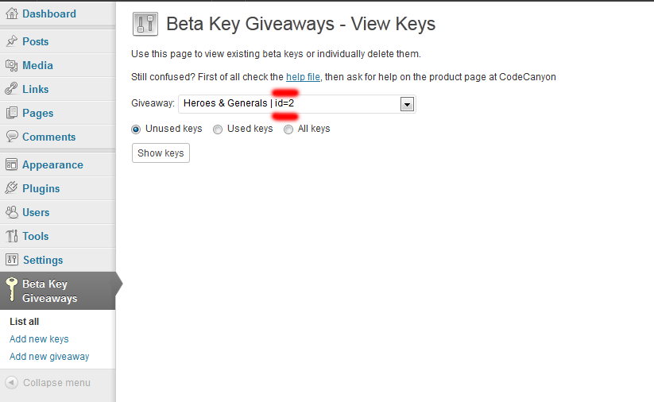
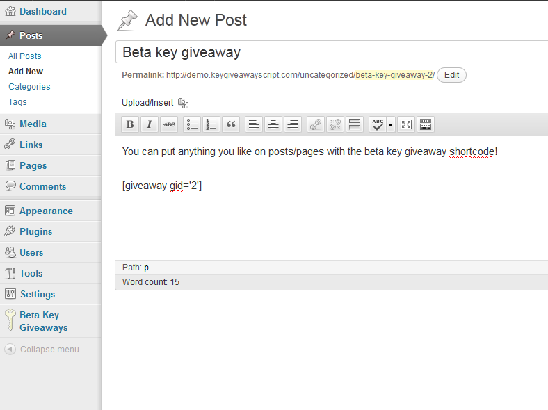

1. Installation
Downloading from keygiveawayscript.com
Download the Beta Key Giveaway plugin from your purchase email and then unzip the download. Once the download has been unzipped you should see a folder called beta-key-giveaway.
Uploading The Plugin
Before uploading the plugin make sure you have installed WordPress 3.0 or higher. You can download WordPress for free from WordPress.org. Now you can upload the plugin in one of two ways:
1. Upload via WordPress
- From your WordPress dashboard go to Plugins -> Add New.
- On the Add New page click on the Upload tab.
- Click the Browse button and locate beta_giveaway.zip that is inside your beta-key-giveaway folder. Double click the file to select it and then click the Install Now button.
If you have trouble uploading the plugin via WordPress you will need to upload the plugin via FTP as explained below.
2. Upload via FTP
- You need to use an FTP client such as FileZilla. To set up your FTP client to connect to your website see: http://codex.wordpress.org/Using_FileZilla
- Upload the beta_giveaway folder that is inside your beta-key-giveaway folder to your WordPress plugins directory wp-content/plugins/.
Activating The Plugin
When uploading the plugin via WordPress you should be prompted to activate the plugin. If uploading the plugin via FTP go to Plugins -> Installed Plugins and click the Activate link below the Beta Key Giveaways plugin.
2. Updating The Plugin
From time to time free plugin updates will be released which will include bug fixes and feature updates. To get these plugin updates you will need to re-download the theme from your CodeCanyon downloads page and unzip the download file.
- Before updating the plugin view the changelog, which tells you what is new, bugs that have been fixed and any files that have been updated, added and/or removed.
- Before updating you should make a back up of your the current plugin/database just in case something goes wrong in the updating process.
- To backup the plugin, use an FTP client to download your beta_giveaway plugin folder from the wp-content/themes/ directory to your hard drive and then rename the folder to something like old_beta_giveaway.
- To backup your database, log into your website cpanel and click on the phpmyadmin application. Browse to the database that you used to install wordpress and click on the export fuction, click the go button and download the .sql file.
- Now upload the new beta_giveaway folder that is inside your beta-key-giveaway folder to your WordPress plugin directory wp-content/plugins/.
- Go to Plugins -> Installed Plugins and check the new version number.
If you have made changes to the plugin files you will want to either make the changes again to the new plugin files or just upload the updated plugin files if they are not your modified files. You can then download
DeltaWalker or
DiffMerge and compare and add the code changes between your modified files and the new plugin files.
3. Using The Plugin
Add New Giveaway
- Login to your Admin Panel.
- Hover your mouse over the Beta Key Giveaways tab and click on the Add new giveaway option.
- You can then add the giveaway name in the text field. Once you have typed in the name, click on the Add Giveaway button to create the giveaway. Refresh the page to double check that the new giveaway has appeared in the grey table.

Add Keys
- Go to Beta Key Giveaways -> Add new keys to add an unlimted amount of keys to your giveaway.
- Click the giveaway dropdown menu and select the giveaway you want to add keys to.
- Type in the keys in the input box below the dropdown menu. If you want to add multiple keys in one session, you need to type in one set of keys per line.
If you're uploading a large amount of keys the process may take a few minutes depending on your webhost. Please wait until the Keys were added message comes up before leaving/refreshing the page. If you leave/refresh the page piror to the message appearing I cannot guarantee that all the keys will be added successfully.

Start The Giveaway
- Go to Beta Key Giveaways -> List all and select the giveaway you want to start with the dropdown menu.
- Take note of the the ID number next to the giveaway name as you will need to put this number in the shortcode to display the giveaway.

- Go to the page or post that you would like to have your beta key giveaway on and type this shortcode in the editor [giveaway gid='id of giveaway']. Don't forget to replace the "id of giveaway" text with the ID number of your giveaway!

Congratulations! You should now have your first beta key giveaway up and running. If you have any problems, read the Troubleshooting & FAQs section below. If the answer to the problem isn't there, please do not hestate in contacting me.
6. Troubleshooting & FAQs
Double check that you have used the correct ID number with the shortcode. Using an invaild ID number will result in the script showing that there no keys left to the enduser..
The shortcode to display beta key giveaways is
[giveaway gid='id of giveaway']. Replace the "id of giveaway" text with the actual ID number of the giveaway you're attempting to start.
Follow the following steps to delete giveaways:
Go to Beta Key Giveaways -> Add new giveaway.
Locate the giveaway you want to delete in the table and press the blue X letter.
Follow the following steps to delete individual keys:
Go to Beta Key Giveaways -> List all
Use the dropdown menu and choose the giveaway that the key(s) you want to delete are part of.
Click All keys and locate the key(s) you want to delete.
Click the blue X letter to permanently delete your key.